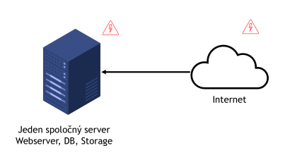
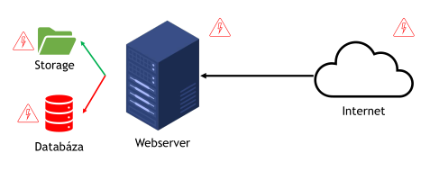
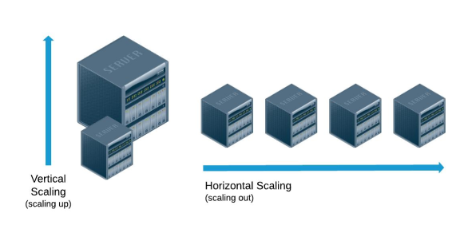

High availability
Čo je to High availability?
- High availability je názov pre súbor technológií, ktoré umožňujú poskytovať služby s vysokou dostupnosťou pre zákazníkov.
- Znamená to, že poskytovateľ služby garantuje mieru dostupnosti služby na úrovni aspoň 99,9 %.
- Miera dostupnosti sa definuje v zmluve v časti Service Level Agreement (SLA).
- Pri dostupnosti 99,9 % je možný výpadok služby približne 44 minút za mesiac, teda asi 1,5 minúty za deň.
Tabuľka dostupnosti
| Percentuálne vyjadrenie | Nedostupnosť počas mesiaca | Nedostupnosť počas dňa | Popis |
|---|---|---|---|
| 90 % | 73 hod 3 min (3 dni) | 2 hod 24 min | Garantuje bežný ISP |
| 99 % | 7 hod 19 min | 14 min | Klasický webhosting |
| 99,9 % | 44 min | 1,5 min | Základná hodnota HA |
| 99,99 % | 4,4 min | 9 sek | Rozumná hodnota HA |
| 99,999 % | 26 sek | < 1 sek | Kritické systémy |
Ako dosiahnuť vysokú dostupnosť?
- Základom je redundancia, teda mať komponenty navyše, aby v prípade výpadku mohol ich úlohu prevziať náhradný komponent.
- Cieľom je zbaviť sa tzv. SPOF (Single Point Of Failure), teda miest v infraštruktúre, ktorých zlyhanie by prerušilo dodávku služby.
- SPOF môže byť napríklad disk, server, sieťové pripojenie, elektrické napájanie alebo samotná aplikácia.
- Zároveň treba zabezpečiť replikáciu dát, aby sa na redundantných miestach nachádzali rovnaké údaje.
Výhody a nevýhody vysokej dostupnosti
Výhody
- Spokojnosť zákazníkov
- Zníženie času potrebného na údržbu
- Minimalizácia dopadov pri problémoch
- Schopnosť služby rásť – škálovanie
Nevýhody
- Zložitosť a komplexnosť riešenia
- Vyššie obstarávacie náklady
- Vyššie prevádzkové náklady, pretože redundancia beží neustále
- Jalový výkon – časť výkonu sa využije až pri výpadku
- Nutnosť mať na sklade náhradné súčiastky
Kde je možné alebo potrebné riešiť vysokú dostupnosť?
- Aplikácia – connection pools, fronty
- Softvérová architektúra – replikácia dát, balancery
- Hardvérová architektúra – RAID, NIC teaming, zdieľané úložisko
- Sieťová architektúra – VRRP, multihoming
Príklad
- Ak chceme dosiahnuť vysokú dostupnosť e-shopu, musíme zabezpečiť všetky dôležité časti jeho prevádzky.
- Aplikácia pre svoj beh potrebuje webový server, databázový server, operačný systém, úložisko dát a pripojenie do internetu.
HA na úrovni softvérovej architektúry
- Na začiatku býva všetko na jednom serveri – webserver, databáza aj storage.
- Ďalším krokom je rozdelenie systému na viaceré časti, ktoré môžeme neskôr znásobovať, napríklad aj pomocou virtuálnych serverov.
- Následne sa zavedie replikácia dát medzi hlavný a záložný storage a databázu.
- Potom sa pridajú redundantné webové servery a ich prevádzku riadi load balancer.
- Na odstránenie ďalšieho SPOF sa môžu použiť dva load balancery fungujúce cez DNS alebo Virtual IP.
- Pri výpadku databázy alebo storage sa dá prepínanie zautomatizovať pomocou interného load balancera.

HA na úrovni hardvéru a siete
- Na začiatku máme jeden server pripojený do internetu.
- Ďalej pridáme viac serverov cez switch a vytvoríme serverový klaster, aby pri výpadku jedného servera prevzal úlohu iný.
- Potom odstránime SPOF switcha pridaním druhého switcha a prepojením serverov s oboma switchmi.
- Následne sa pridáva redundantný router, aby zlyhanie jedného routra neodstavilo sieť.
- Posledným krokom môže byť viacnásobné pripojenie do internetu cez rovnakého alebo iného ISP.
- Najvyššou úrovňou je georeplikácia, teda replikácia celého riešenia do inej geografickej lokality.

High availability a škálovanie
- Vysoká dostupnosť znamená aj to, že používatelia majú dáta k dispozícii vtedy, keď ich potrebujú, a čo najrýchlejšie.
- Veľké množstvo používateľov môže službu preťažiť a spôsobiť pomalú odozvu alebo timeout.
- Vertikálne škálovanie (scale-up) znamená pridanie výkonu jednému serveru, napríklad CPU, RAM, úložiska alebo sieťových kariet.
- Horizontálne škálovanie (scale-out) znamená pridanie ďalších serverov a ich spoločné používanie v klastri.

High availability a load balancing
- Pri horizontálnom škálovaní treba zabezpečiť rovnomerné rozdelenie záťaže medzi jednotlivé uzly klastra.
- Na to slúži load balancer.
- Round robin – každé nové pripojenie sa presmeruje na ďalší server dookola.
- Weighted round robin – servery majú nastavené váhy, podľa ktorých sa rozdeľujú požiadavky.
- Least connection – požiadavka sa pošle na server s najmenším počtom otvorených spojení.
- Response time – požiadavka sa pošle na server, ktorý reaguje najrýchlejšie.